SKILLS
ABOUT
디지털마케팅공학의 논리 위에 AI 활용 능력을 더하는 마케터입니다.
데이터로 읽고, 콘텐츠로 말하고, AI로 실행합니다.
EDUCATION
COURSES
ACTIVITIES
SKILLS
PROJECTS
수능 국어 전문 교육 브랜드 이감의 홍보 릴스 영상을 기획·제작하였습니다. 브랜드 정체성과 타겟 수험생층의 공감 포인트를 분석하여 콘텐츠를 구성했으며, 제작한 영상은 이감 공식 인스타그램 계정에 채택되었습니다.
채택 영상 보기 →산학협력 프로젝트로 CUNI 브랜드의 블로그 콘텐츠 기획 및 바이럴 마케팅을 진행하였으며, 이후 협찬 영상 제작까지 총괄하였습니다.
인천서부경찰서 산학협력 프로그램에 참여하였습니다. 공공기관 홍보 영상의 기획부터 촬영, 편집까지 총괄하였습니다.
WEB DESIGN
오늘의 기분과 취향에 딱 맞는 영화를 추천해주는 서비스. 페르소나 설정부터 화면 설계까지 기획·디자인하였습니다.
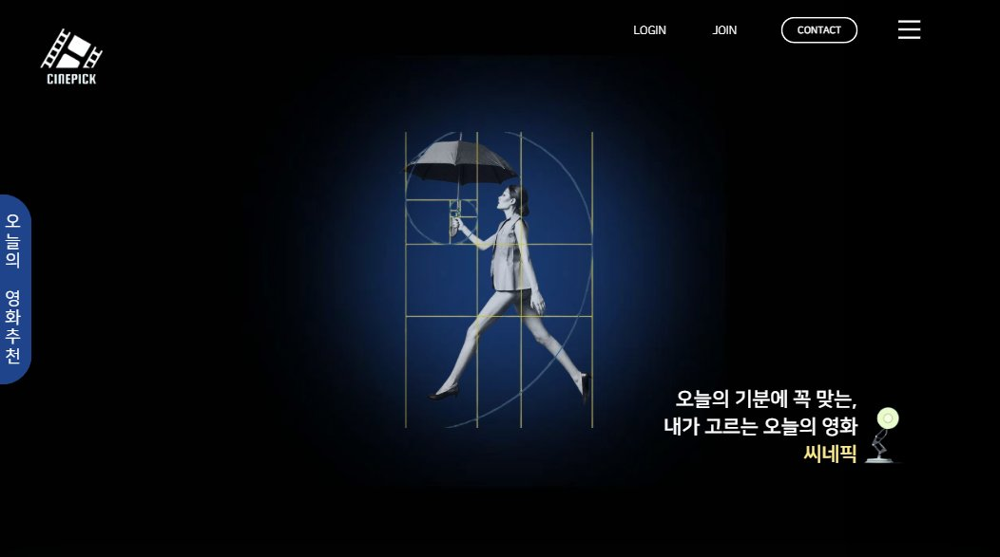
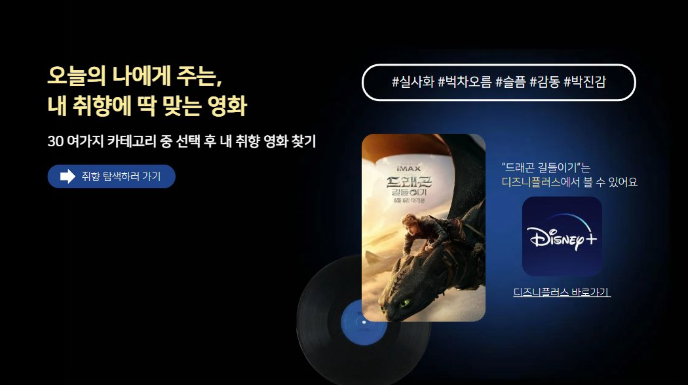
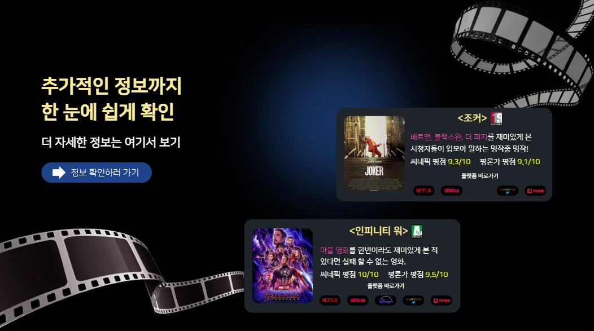
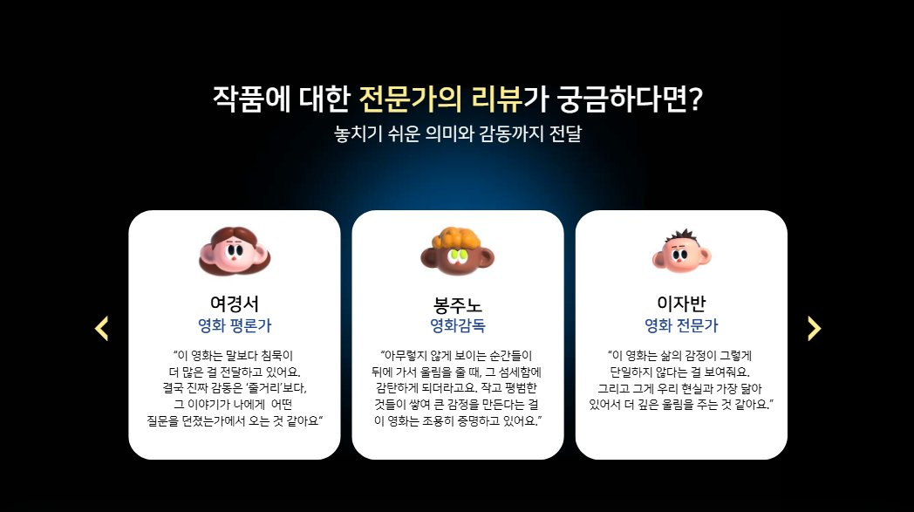
졸업 프로젝트 · 2026
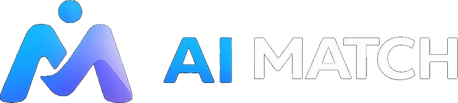
방향은 짧게, 확신은 깊게.
직장인을 위한 AI 필터.
AI를 쓰기 시작한 뒤로 많은 게 달라졌습니다. 혼자서 할 수 있는 것의 범위가 넓어지고 일하는 방식 자체가 바뀌었습니다. 하지만 많은 사람들이 아직 시작조차 못하고 있었습니다. 도구가 없어서가 아니라, 어떤 도구인지 몰라서. 그 안타까움이 AIMATCH의 출발점이었습니다.
AI 시장이 얼마나 빠르게 움직이고 있는지 확인했습니다.
생성형 AI 서비스 이용 경험률
인터넷 이용자 기준 · 단위: %
2년 만에 2.5배. 생성형 AI는 이미 2명 중 1명이 경험하는 도구가 됐습니다.
AI 관련 키워드 검색량 추이
네이버 데이터랩 · 2022.05–2025.05
ai · chatgpt · gemini · 클로바 등 복합 키워드 기준. 관심은 폭발했습니다.
현재 AI를 도입 중인 기업
아웃소싱타임스 · 2024.08 / 국내 기업 500개사 대상
10곳 중 8곳이 필요하다 느끼면서도 실제 도입은 3곳. 나머지는 지금 결정하는 중입니다.
관심은 넘치는데 도입은 더딥니다. 왜일까요?
기술의 문제가 아니라, 지식 부족에서 원인을 찾았습니다.
실제로 AI를 쓰는 사람은 누구이고, 무엇을 위해 쓰는지 살펴봤습니다.
연령별 생성형 AI 구독 비중
신한카드 빅데이터연구소 · 2025.01–05 · 단위: %
가장 많이 쓰는 연령대는 30대. 직장에서 가장 바쁘고, 효율에 가장 민감한 세대입니다.
생성형 AI 사용 목적
mobilinside.co.kr 온라인 설문 · 2024.02 · 단위: %
AI를 쓰는 이유 1순위는 '업무 효율'. 자기계발도, 호기심도 아닌 실용입니다.

메인 홈
처음 접속해도 어디서 시작할지 바로 알 수 있는 구조

후기순 랭킹
내 직종에서 실제로 많이 쓰이는 AI, 광고 없이 후기 데이터로만
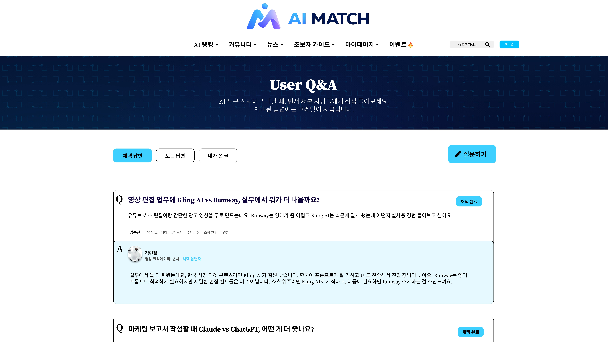
User Q&A
먼저 써본 사람에게 직접 물어볼 수 있는 커뮤니티
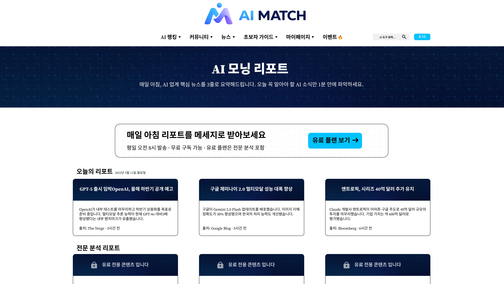
AI 모닝 리포트
매일 AI 뉴스를 찾아보기 어려운 사람을 위한 3줄 요약
초기 이용자 확보를 위한 콘텐츠 초안 제작
AI에 관심은 있지만 어디서 시작할지 몰라 머뭇거리는 사람들의 진입장벽을 허물고, 자연스러운 서비스 유입을 이끌어내는 것이 목표입니다.
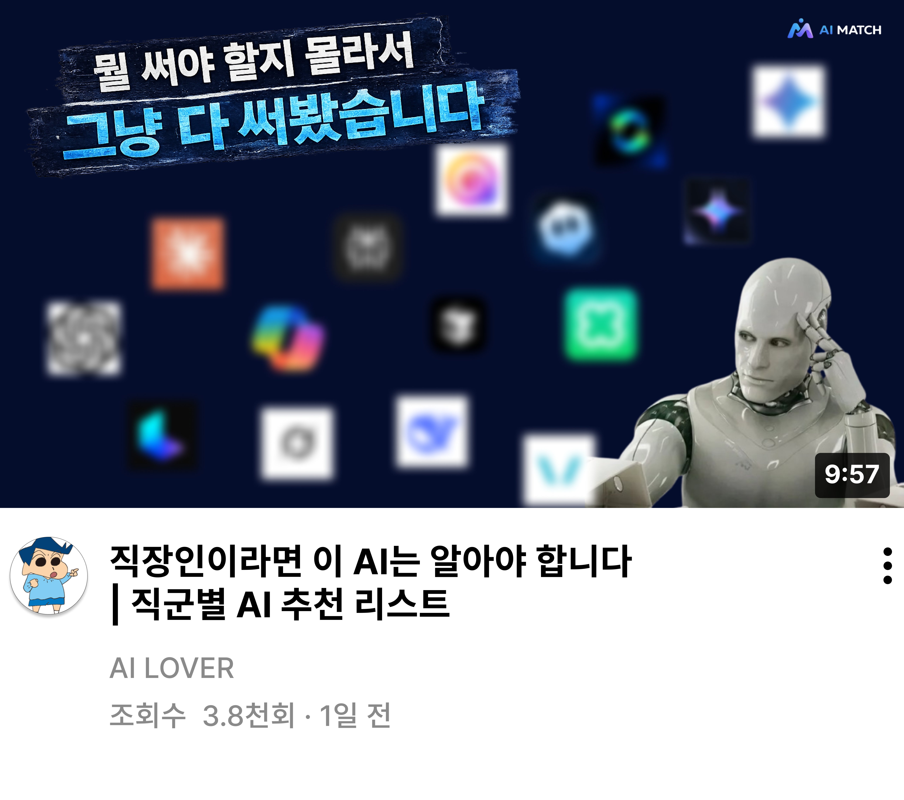
유튜브
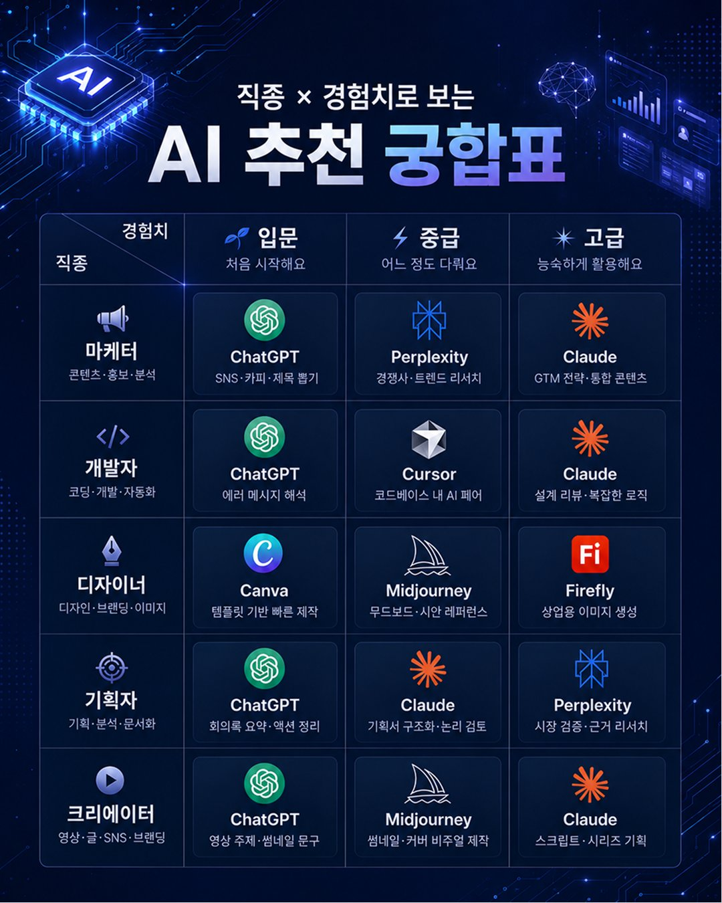
인스타그램
2026년 졸업전시회에 출품된 최종 결과물입니다.
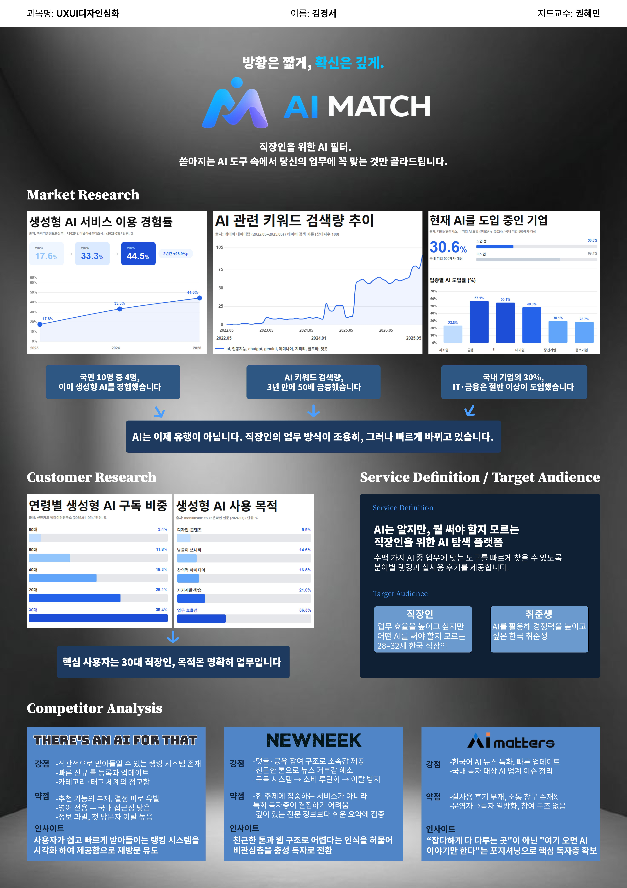
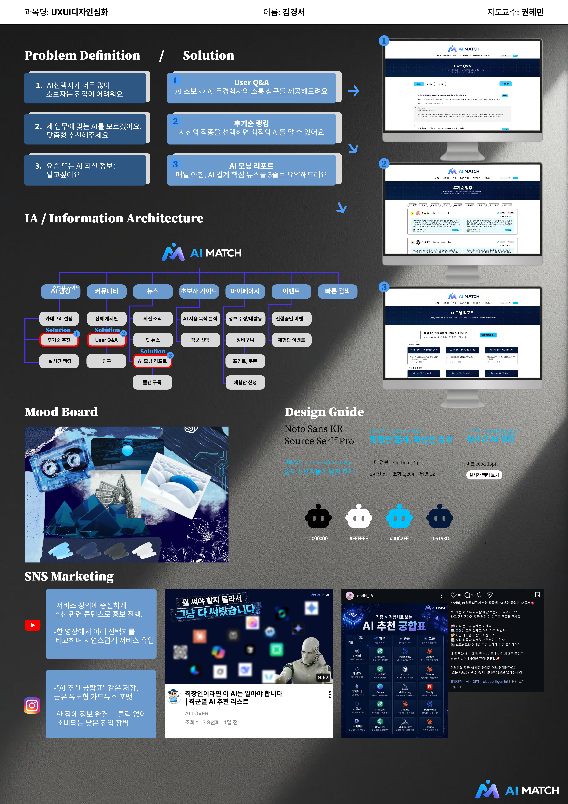